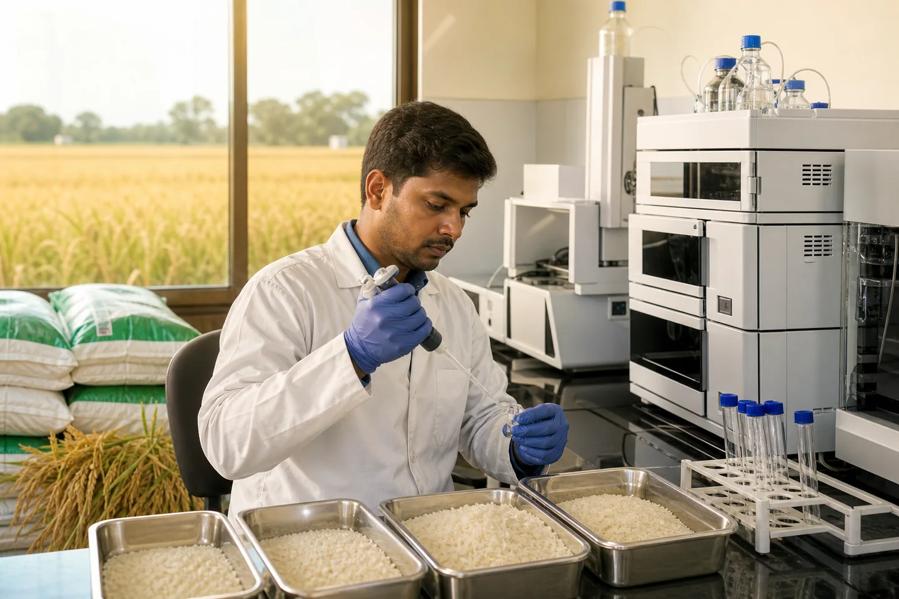

LMR de plaguicidas y basmati en la UE: lo que todo comprador debe saber

JFT Agro Editorial • Basmati Rice Residue Testing
Este artículo se ha trasladado a una guía relacionada verificada.
Continuar al artículo